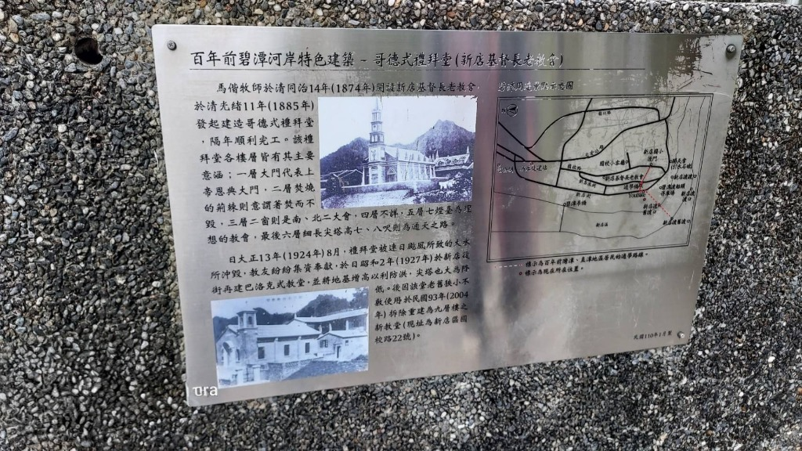

馬偕在碧潭的行履
文/吳培珍
提到馬偕博士，我們腦海中總會浮現淡水河畔的禮拜堂、牛津學堂，或是他為病患拔牙的影像。然而，一段碧潭走讀的旅程，讓我看見了這位傳教士更深層的足跡。在河岸邊，一塊斑駁的介紹牌揭示了不為人知的歷史：這裡曾矗立著馬偕親手蓋下的教堂。

馬偕的日記裡，記錄著當年碧潭的模樣：河面寬闊、平靜，溪水呈現一潭清澈的碧綠，岸邊則鋪滿了累累的鵝卵石。那是一幅純淨而寧靜的景致。然而，無情的暴雨洪水幾經肆虐，那座有形的教堂最終還是被沖走了。它幾經遷徙，才成為今日位於國校路的台灣基督長老教會新店教會。
雖然最初的建築已不復存在，但馬偕在碧潭留下的福音信仰與人文關懷，並沒有被洪水帶走。那些曾經在碧綠溪水旁響起的祈禱聲，以及對這片土地的熱愛，早已悄然融入新店的土壤與河流之中，成為這片土地最溫柔、最深沉的一部分。